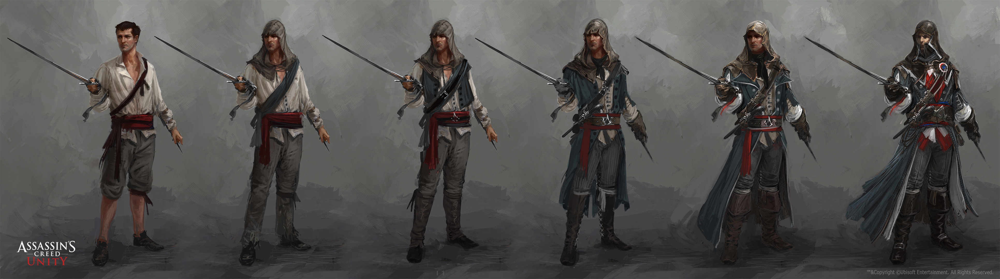
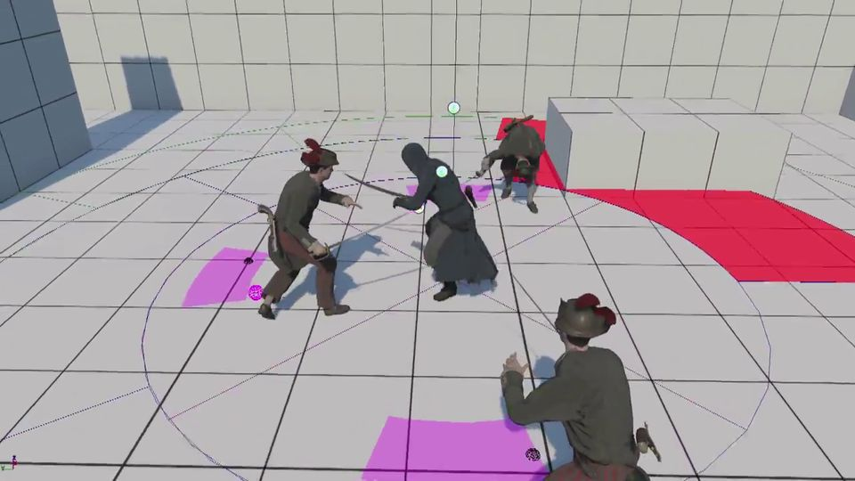
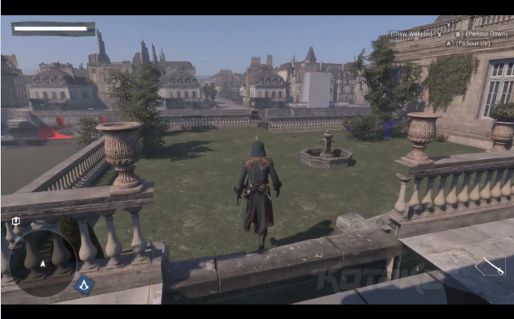
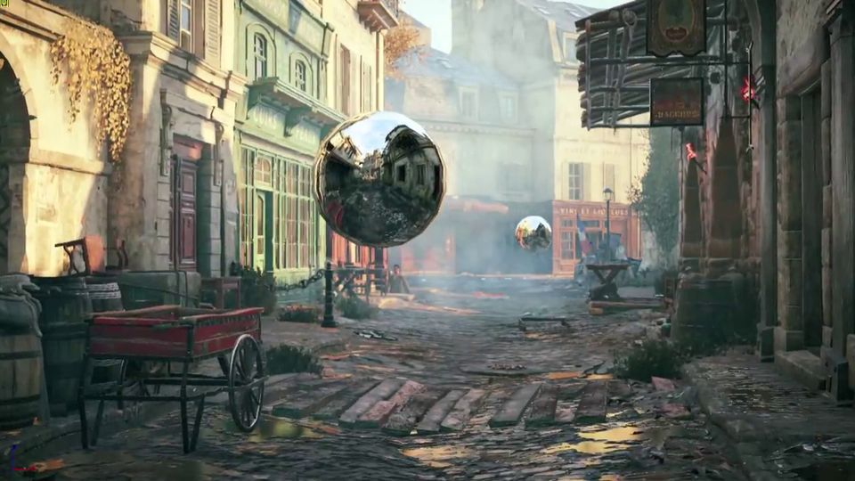

Waterfall e Agile
Quando si parla di modello/filosofie di sviluppo i più gettoni e conosciuti sono senza dubbio i modelli Waterfall e Agile, ove il modello Waterfall (a cascata), può essere identificato come quello tradizionale e più "vecchio" mentre Agile e il nuovo metodo più moderno e in voga al momento. Entrambi sono metodi maturi ed utilizzati da diverse compagnie da molto tempo.
Procediamo con il vedere le differenze.
Schema mostrante i due modelli
Modello Waterfall
Il metodo Waterfall consiste in un approccio lineare allo sviluppo del software, in questa modello la sequenza degli eventi è qualcosa di molto simile a:
- Raccogliere la documentazione e i vari requisiti
- Fase di Design
- Fase di programmazione/sviluppo
- Fase di testing
- Fase di controllo dell'apprezzamento da parte del cliente (UAT)
- Fix degli errori
- Rilascio (delivery) del prodotto finito
In un VERO modello di sviluppo Waterfall, ognuna di queste fasi costituisce un punto ben distinto dello sviluppo del software, e generalmente ogni passo deve finire prima che il successivo possa iniziare. C'è inoltre spesso un piccolo brief tra le fasi ove il costumer controlla e approva i requisiti e l'andamento del progetto e da il via libera per la fase successiva.
Modello Agile
Come detto precedentemente il modello Agile è un modello più moderno nato nel 2001 (ma ideato già verso la fine degli anni 90), da diciasette sviluppatori software che si ritrovarono allo Snowbird Resort in Utah per discutere di un nuovo modello di sviluppo. Tra questi anche Jeff Sutherland e Ken Schwaber. Esso mirava ad essere un metodo più efficente rispetto al Waterfall in quanto dati del tempo riportavano che il 97% dei progetti utilizzanti Waterfall falliva.
I valori di Agile sono:
- Individuals and interactions over processes and tools
- Working software over comprehensive documentation
- Customer collaboration over contract negotiation
- Responding to change over following a plan
Ove ognuno di questi punti ha un significato ben specifico e concreto, in generale il modello Agile punta al rompere molte barriere nei confronti del cliente rispetto a quanto facesse Waterfall, un esempio è "Costumer collaboration over contract negotiation", che indica il fatto di negoziare con il cliente eventuali modifiche che esso richiede se può aumentare la qualità del rapporto con esso al posto che attenersi rigidamente al contratto e negare al cliente qual si voglia ulteriore richiesta.
I ruoli fondamentali per un modello Agile sono 3:
Self Organization Team
e le sue caratteristiche sono:
- decide autonomamente come dividersi il lavoro
- può fare tutto all’interno delle guideline per raggiungere gli obiettivi
- demo al Product Owner
Product Owner
La responsabilità principale del Product Owner è che il prodotto rispetti le aspettative del cliente. Nel dettaglio:
- definisce le funzionalità del progetto
- decide le date di rilascio ed il relativo contenuto
- responsabile del ROI (Return On Investment)
- può cambiare funzionalità solo oltre i 30 giorni
- accetta o rifiuta il lavoro del team
Scrum Master
Lo Scrum Master deve assicurarsi che il team sia produttivo e che il metodo Scrum sia applicato correttamente.
In particolare:
- rimuove gli impedimenti
- si assicura che il processo e le linee guida siano rispettate
- protegge il team dalle interferenze esterne (amministratore delegato invadente, clienti ansiosi,
Di seguito ho scelto un azienda (Ubisoft) per fornire un esempio di Agile.
Esempio Agile: Ubisoft
Logo odierno di Ubisoft
Ubisoft è un azienda molto rinomata e anziana nel campo dello sviluppo di videogiochi, nata nel 1986 a Carentoir ha saputo farsi stada negli anni e costruirsi un nome grazie ai suoi metodi rapidi di sviluppo e buone tecniche di marketing. Il modello di sviluppo di Ubisoft può variare a seconda del team interno che lavora al gioco ma in generale il producer tende a favorire e consigliare il modello Agile o comunque qualcosa di molto vicino ad esso (Ubisoft è sempre in cerca di Scrum Master da assumere! Che come visto precedentemente è un ruolo fondamentale nel ciclo di sviluppo Agile). Grazie al suo adattarsi alle richieste dei clienti e un eccezionale dote nel seguire il mercato Ubisoft vanta oggi di essere una publisher importantissima e fortissima sia economicamente che come fama, composta da 14 sedi ognugna delle quali composta da almeno un team, in totale ha più di 3500 dipendenti.
Generalmente il primo passo che Ubisoft tende a fare per la realizzazione di un nuovo videogioco è una profonda ricerca di marketing la quale solitamente non dura più di 2-3 mesi, nella quale vengono raccolte informazioni interenti i gusti dei possibili acquirenti, e possibilità molto solide riguardo a cosa essi vorrebbero vedere sul mercato. Questo processo è seguito da una stima dei requisiti intesi sia come monetari che di tempo. Una volta raccolte tutte le informazioni necessarie si fa una bozza di design la quale va presentata alla publisher (in questo caso Ubisoft stessa) la quale se apprezzerà il concept portato darà il via al classico sviluppo del videogioco.
Di seguito qualche screen delle fasi di alcune delle fasi di sviluppo di un gioco Ubisoft.
Concept Art - Fase di Design
Inizio scrittura del codice
Early stage del gioco, ancora molti elementi assenti, special modo quelli grafici
Aggiunta degli elementi grafici/post processing assenti
Prodotto potenzialmente finito in fase di testing

Il tutto seguito da un continuo delle campagne marketing che già avevano precedentemente annunciato e sponsorizzato il prodotto, e l'aggiunta di un supporto attivo con rilascio di ulteriori patch, DLC, fix e ulteriori passi di ottimizzazione per un ciclo di solita duranta di un anno.